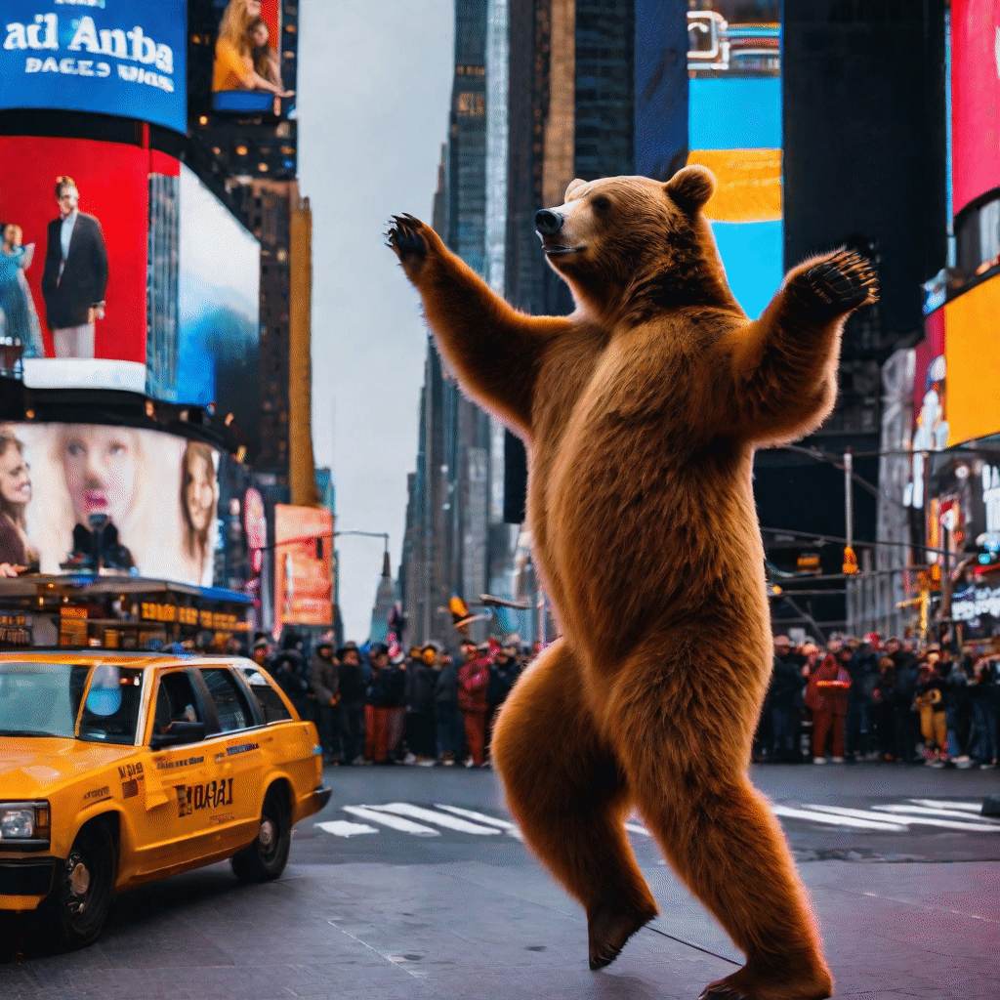
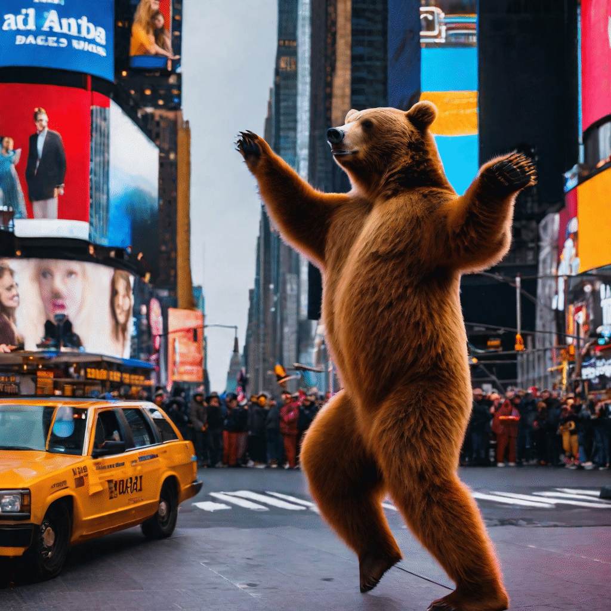
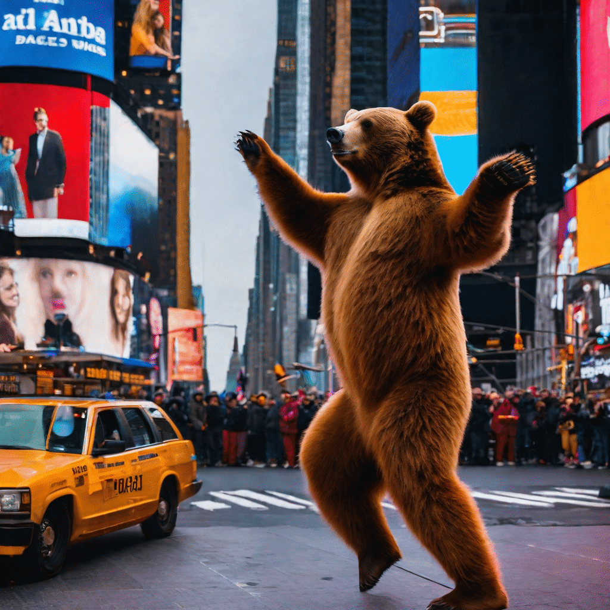
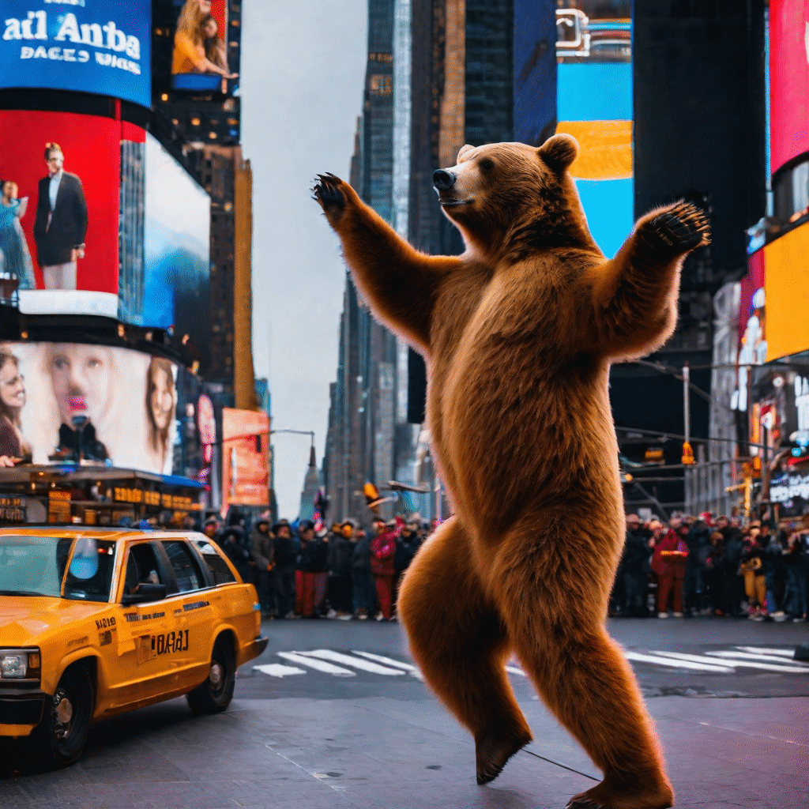

We present Readout Guidance, a method for controlling text-to-image diffusion models with learned signals. Readout Guidance uses readout heads, lightweight networks trained to extract signals from the features of a pre-trained, frozen diffusion model at every timestep. These readouts can encode single-image properties, such as pose, depth, and edges; or higher-order properties that relate multiple images, such as correspondence and appearance similarity. Furthermore, by comparing the readout estimates to a user-defined target, and back-propagating the gradient through the readout head, these estimates can be used to guide the sampling process. Compared to prior methods for conditional generation, Readout Guidance requires significantly fewer added parameters and training samples, and offers a convenient and simple recipe for reproducing different forms of conditional control under a single framework, with a single architecture and sampling procedure. We showcase these benefits in the applications of drag-based manipulation, identity-consistent generation, and spatially aligned control.

Given a frozen pre-trained text-to-image diffusion model, we learn parameter-efficient readout heads to interpret relevant signals, or readouts, from the intermediate network features. These readouts can be single-image concepts such as pose and depth, or concepts that are relative to two images, such as appearance similarity and correspondence. We use the readouts for sampling-time guidance to enable controlled image generation.
@article{luo2023readoutguidance,
title={Readout Guidance: Learning Control from Diffusion Features},
author={Grace Luo and Trevor Darrell and Oliver Wang and Dan B Goldman and Aleksander Holynski},
journal={arXiv preprint},
year={2023}
}


 

 
